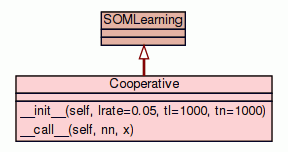

Class FFLearning
source code

Base class for FeedForwarding Multilayer neural networks.
As a base class, this class doesn't do anything. You should subclass this
class if you want to implement a learning method for multilayer networks.
A learning method for a neural net of this kind must deal with a
FeedForward instance. A FeedForward object is a list of Layers
(consulting the documentation of these classes is important!). Each layer is
a bidimensional array, where each line represents the synaptic weights of a
single neuron. So, a multilayer network is actually a three-dimensional
array, if you will. Usually, though, learning methods for this kind of net
propagate some measure of the error from the output back to the input (the
BackPropagation method, for instance).
A class implementing a learning method should have at least two methods:
- __init__
- The __init__ method should initialize the object. It is in general
used to configure some property of the learning algorithm, such as the
learning rate.
- __call__
The __call__ interface is how the method should interact with the
neural network. It should have the following signature:
__call__(self, nn, x, d)
where nn is the FeedForward instance to be modified in loco,
x is the input vector and d is the desired response of the net
for that particular input vector. It should return nothing.
|
|
|
|
Inherited from object:
__delattr__,
__getattribute__,
__hash__,
__init__,
__new__,
__reduce__,
__reduce_ex__,
__repr__,
__setattr__,
__str__
|
|
Inherited from object:
__class__
|
|
The __call__ interface.
Read the documentation for this class for more information. A call to
the class should have the following parameters:
- Parameters:
nn - A FeedForward neural network instance that is going to be
modified by the learning algorithm. The modification is made in
loco, that is, the synaptic weights of nn should be modified
in place, and not returned from this function.x - The input vector from the training set.d - The desired response for the given input vector.
|